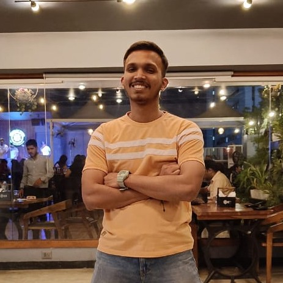

Vinil kanojiya
Senior Software Engineer, Capgemini
Summary:
Skilled React Developer with 2 years of experience in developing and implementing front-end architectures that have resulted in significant increases in page load speed and user engagement. Proficient in collaborating with back-end teams to integrate user-facing elements with server-side logic, implementing automated testing platforms, and optimizing components for maximum performance. Adept at identifying and resolving performance and scalability issues, staying up-to-date with emerging technologies and frameworks, and reducing development time for new projects.
Educational Qualification:
Bachelor of Technology in Computer Science Engineering from Shri Vaishnav Institute of Information Technology, Indore affiliated to Shri Vaishnav Vishwavidyalaya, Indore.
Work Experience:
-
Capgemini Technology Services India Limited
Interval: (June 2021 – till date)
Role: Sr. Software Engineer
- Developed and implemented a new front-end architecture using React.js, resulting in a 25% increase in page load speed and a 15% increase in user engagement.
- Collaborated with the back-end team to integrate user-facing elements with server-side logic, resulting in a 20% reduction in server response time.
- Implemented automated testing platforms and unit tests, resulting in a 30% reduction in bug-related delays and a 20% increase in overall code quality.
-
Roxaiser Technology Pvt. Ltd.
Interval : ( Jan, 2020 – April,2020)
Role: Intern (Web development)
- Worked with the front-end team and collaboration with other team members.
- Performed the front-end part of the project.
- Environment: HTML, CSS, Bootstrap.
Skills
- React.js
- Redux
- JavaScript (ES6+)
- HTML5
- CSS3
- Responsive Web Design
- Cross-Browser Compatibility
- Front-end Architecture
- RESTful APIs
- Node.js
- Webpack
- Babel
- Git
- Unit Testing
- Performance Optimization
- Scalability
- Team Collaboration
- Problem Solving
- Continuous Learning
- Time Management
Awards, certifications, or other achievements
- The Complete 2023 Web Development Bootcamp : HTML, CSS, Javascript, Node, React, MongoDB, Web3 and DApps
- Create Your First Automation Script Using Selenium and Java (Coursera)
- A Practical Start with React 17 provided by Pluralsight
- Secured National rank - 3123 into TCS Codevita season 8 : Qualified in Round 1 of CodeVita Season 8 held on 28th June 2019 - 13th July 2019 and secured Rank 3811 from total participation of 55,654 my default coding language in competition is C++
- Trained in Selenium with Java automation framework
- Entrepreneurship Awareness Camp 2018 & 2019
Extracurricular Activities:
- Secure 1st position in drawing competition at Capgemini
- International Model United Nations 2016: Represented BABULAL GOUR in AIPPM
- AVHAN 2019 - IIT MUMBAI: Participation in National Level Sports Tournament as CAPTAIN
- AIU FOOTBALL league 2017: I contributed my efforts to our team as a GOALKEEPER.
- Represented branch in multiple games e.g. Kabaddi, basketball, volleyball & handball in college.
- Managed multiple events as team head and volunteer in college.
Hobbies
- Sketching
- Digital art
- Play Musical instruments
- Play outdoor games
Hobbies portfolio